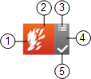

Event Button
An event button is a graphic indicator that displays on the left side of an event descriptor. It graphically summarizes some of the most important information about that event.
An event button flashes until you acknowledge its associated event.
In some Client Profiles, when Event List is closed the event buttons remain still visible (as an Event bar) on the left-hand side of the screen.

1 | Discipline icon | Discipline of the event source. |
2 | Main background color of the button | Event category. The events that occur in the Desigo CC management station are grouped into categories, which are color-coded by severity. The specific category colors employed are dependent on the event schema. |
3 | Assisted treatment icon | This icon is available for an event that can be handled in assisted treatment. For instructions, see Handling Events with Assisted Treatment. |
4 | Bar along the right-hand side of the button | The background color indicates the source status, whether the event source is:
|
5 | Suggested action icon1) | Next action to be taken. For more details, see Event Status and Suggested Action. |
Event Button and What it Tells You
Button | Event Status | Source Status | Suggested Action | Additional Information |
|---|---|---|---|---|
|
|
| The event is unselected and not yet acknowledged, or you already selected the event, but you must still acknowledge it. | |
|
|
| The event source is back to normal. | |
|
|
or
| You acknowledged the event, but no further action is yet possible, and the Reset command is not available. | |
|
|
| You already selected the event, and the Reset command is available. | |
|
|
| The event source is back to normal. | |
|
|
| The event source is back to normal. The assisted treatment is set to force a manual close of the event. | |
|
|
| The event was closed but is still selected. | |
One of the previous event statuses |
| One of the previous suggested actions | The event source is in maintenance. |